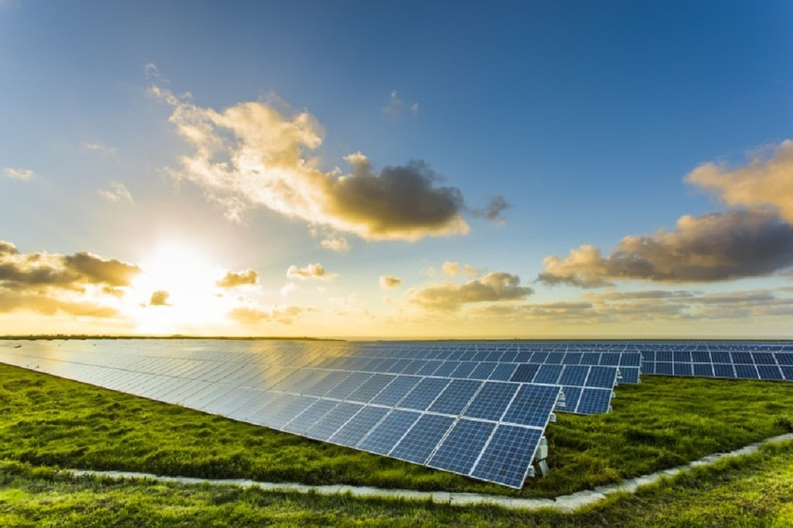
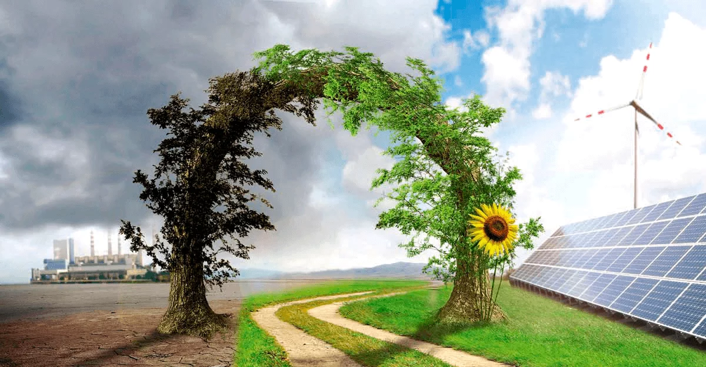

A energia solar é uma das formas de energia renovável mais promissoras do mundo, pois utiliza uma fonte inesgotável de energia, o Sol, para gerar eletricidade. Além de ser uma fonte limpa e sustentável, a energia solar tem se tornado cada vez mais acessível e econômica, graças ao avanço da tecnologia e das políticas de incentivo governamentais.
Uma das principais vantagens da energia solar é que ela não emite gases de efeito estufa, contribuindo para a redução da pegada de carbono e para a preservação do meio ambiente. Além disso, os painéis solares têm uma vida útil longa, podendo durar até 25 anos ou mais, o que torna o investimento em energia solar uma opção financeiramente viável a longo prazo.
A energia solar é uma das fontes de energia mais limpas e sustentáveis disponíveis atualmente. Ela não emite gases de efeito estufa ou outros poluentes, e sua produção não causa impactos ambientais significativos. Além disso, a energia solar é abundante e amplamente disponível em todo o mundo, o que a torna uma fonte de energia renovável muito promissora.

Outra vantagem da energia solar é que ela pode ser instalada em locais remotos, sem acesso à rede elétrica, o que é particularmente útil em países em desenvolvimento e em regiões rurais. Além disso, a instalação de painéis solares em telhados de residências e empresas pode ajudar a reduzir a dependência de fontes de energia mais caras e instáveis, como os combustíveis fósseis.
Apesar das vantagens, a energia solar ainda enfrenta alguns desafios, como a dependência da radiação solar, que varia ao longo do dia e das estações do ano, e a necessidade de áreas extensas de instalação de painéis solares para gerar grandes quantidades de eletricidade. No entanto, o desenvolvimento de tecnologias de armazenamento de energia, como as baterias solares, e o aprimoramento dos sistemas de monitoramento e controle, podem ajudar a tornar a energia solar uma fonte ainda mais confiável e competitiva no futuro.

Além dos sistemas fotovoltaicos, os sistemas térmicos são outra forma de aproveitar a energia solar. Esses sistemas usam a energia solar para aquecer água ou ar para uso em processos industriais ou residenciais. Eles gerais
A energia solar está se tornando cada vez mais popular em todo o mundo, à medida que os custos de instalação e produção de energia solar continuam a diminuir. Além disso, os governos e organizações estão incentivando a adoção da energia solar por meio de incentivos fiscais e programas de financiamento.